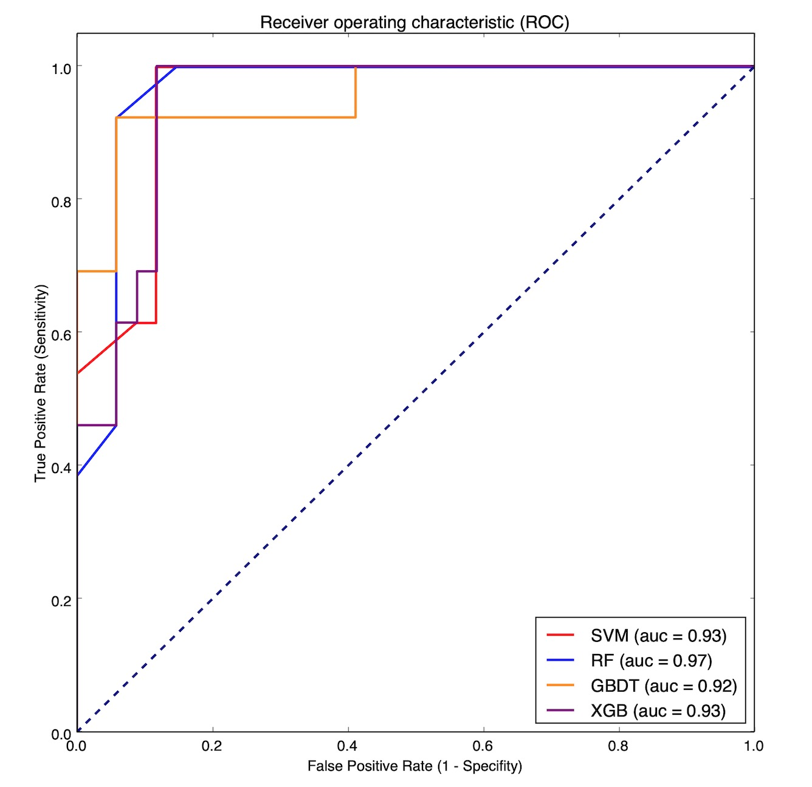

Model Number of features Accuracy Sensitivity Specificity AUC KNN 120.73440.39740.87410.7432 SVM 120.82410.40250.99970.9452 LR 120.80760.61230.88940.8748 RF 120.87930.66420.96880.9518 DTC 120.88280.74850.93980.8442 GBDT 120.88730.73030.95230.9470 XGBoost 120.88640.73800.94750.9364

由上表可知，Random Forest (RF), Support Vection Machine (SVM) and GBDT (Gradient Boosting Decision Tree)都有较好的AUC，其中随机森林（RF）模型的预测AUC最大，因此采用随机森林模型进行分析。
使用随机森林模型对特征的重要性进行排序，得到下表:
1 2 3 4 5 6 7 8 9 10 11 12 13
Variables Important score W 0.215438 X 0.203112 O 0.124807 M 0.095907 Z 0.079793 F 0.065979 G 0.063884 L 0.043462 K 0.041369 T 0.036088 J 0.021013 AE 0.009147
如果我们将重要性程度的阈值定为0.1，那么可以得到重要性最大的特征W,X,O。
之后我们用这3个特征建模，观察实验结果：
1 2 3 4 5 6 7 8
Model Number of features Accuracy Sensitivity Specificity AUC KNN 30.79800.59080.89000.8536 SVM 30.80930.56260.91900.8472 LR 30.76010.51620.86520.8517 RF 30.88350.73190.94930.9351 DTC 30.88480.77170.93500.8533 GBDT 30.88500.75000.94300.9246 XGBoost 30.79940.57050.89580.8768